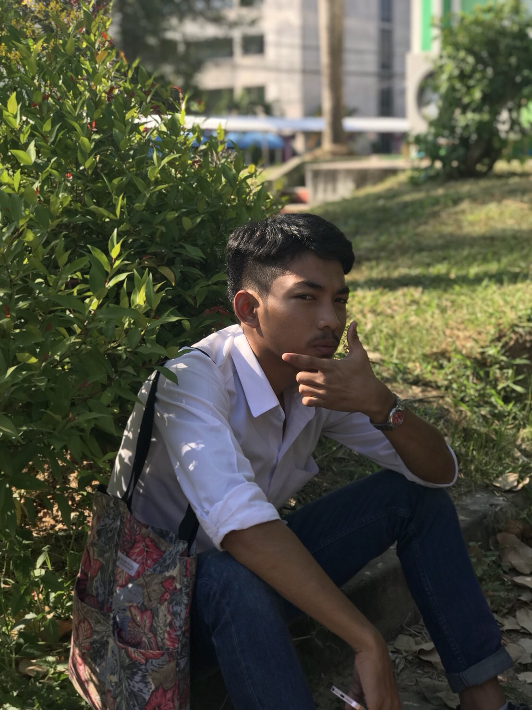

สิ่งที่น่าจดจำในชีวิตมหาวิทยาลัยของผม คือการได้อยู่กับเพื่อน ๆ ได้ทำงาน ได้เรียน ได้เที่ยว และได้อยู่ด้วยกัน นั้นแหละคือสิ่งที่น่าจดจำสำหรับผม.
แม้บางช่วงอาจจะมีทุกข์บ้าง สุขบ้าง ก็ถือสะว่าเป็นสีสันของชีวิต ให้เรียนรู้และยอมรับเพื่อที่จะอยู่กับมัน และนำสิ่งที่ผิดพลาดมาเป็นบทเรียนเพื่อพัฒนาตนเองให้ดีขึ้นต่อไป.
My Phone : 080-1389126
Address : Kongra ,phattalung